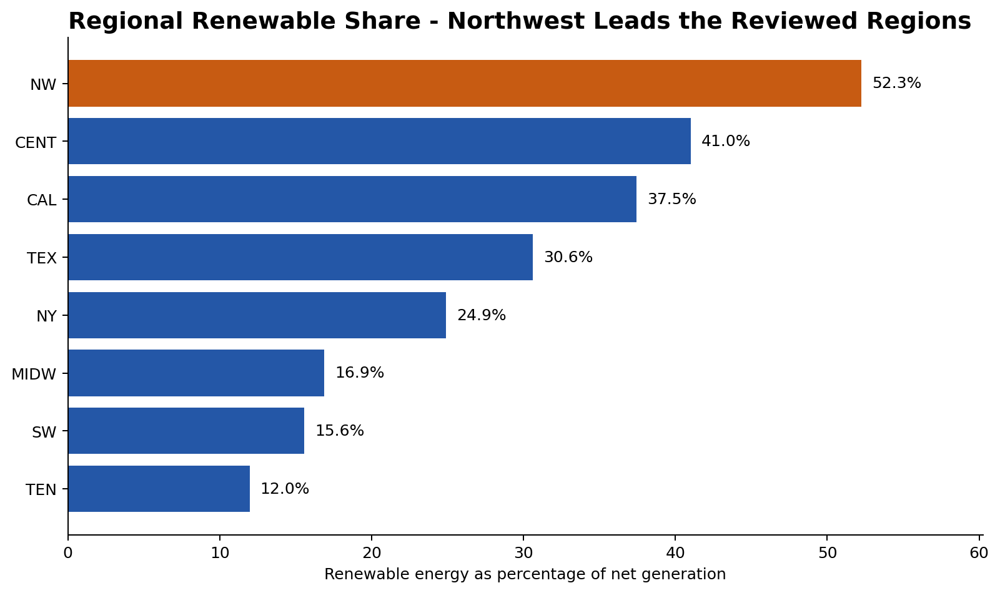

Tableau · dashboard checks · decision support
Renewable Energy and Net Production Dashboard
An interactive regional dashboard built to compare renewable share, energy-source mix, and the balance between generation and demand.
52.25%NW renewable share
+21.69MNW net-production balance
37.45%CAL renewable share
13regions compared

Dashboard decision
The Northwest combined the highest renewable share with a positive generation-demand balance. California had a substantial renewable mix but remained a net importer in the aggregated data. That distinction mattered when recommending a location for a power-intensive facility.
Usability and data checks
- Interactive selectors for region and time period
- Calculated fields for renewable percentage and net production
- Null-value review before comparing regions
- A management-facing layout that keeps the main decision metrics together
Project files
The original packaged Tableau workbook is not included in the public repository because it contains a large course dataset. This case study uses a compact aggregate and documented logic instead.